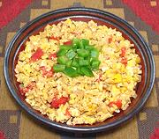

|
Pacaya with EggsMayan Region | ||||
| Serves: Effort: Sched: DoAhead: |
3 break *** 2-1/2 hrs Most |
This recipe makes a hearty vegetarian breakfast for two. It can easily serve three (though less vegetarian) with a sausage on each plate. See Lent for use as a main dish. | |||
|
9 7 4 3 2 1/3 1/4 ----- |
oz oz oz lrg T t t ---- |
Pacayas (1) Tomatoes Onion Eggs Oil Salt Pepper -- Serve with Hot Sauce |
Prep (15 min)
|